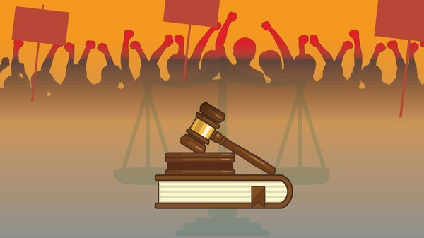

Tentang Kami
Dewan Perwakilan Mahasiswa (DPM) adalah lembaga legislatif mahasiswa di tingkat universitas yang bertugas
mewakili aspirasi mahasiswa, mengawasi jalannya kegiatan kemahasiswaan, dan mengatur serta menyusun
kebijakan-kebijakan yang berkaitan dengan kepentingan mahasiswa. DPM sering kali berperan sebagai jembatan komunikasi
antara pihak mahasiswa dengan pihak kampus (Kemahasiswaan/Rektorat)
Visi
Menjadikan Dewan Perwakilan Mahasiswa STT NF yang berintegritas dan aktif dengan asas kebersamaan
dan kekeluargaan dalam melaksanakan fungsi dari DPM.
Misi
1. Meningkatkan loyalitas, solidaritas dan kekeluargaan internal DPM STT NF
2. Mengoptimalkan landasan hukum dan fungsi pengawasan, aspirasi dan kaderisasi DPM STT NF
3. Meningkatkan komunikasi dan kedekatan antar Organisasi Kemahasiswaan STT NF
TUPOKSI
1. Legislasi

1. Menyalurkan aspirasi mahasiswa STT NF
2. Mensosialisasikan kinerja DPM IM STT NF kepada mahasiswa minimal satu kali dalam satu kepengurusan
3. Membuat peraturan keorganisasian yang belum diatur dalam Anggaran Dasar dan Anggaran Rumah Tangga
IM STT NF berupa Undang-undang, Ketetapan, Keputusan dan Usulan yang tidak bertentangan dengan hasil
Musyawarah Kerja (legislasi)
4. Menetapkan dan mengesahkan Presiden dan Wakil Presiden BEM STT NF, Ketua dan Wakil Ketua HIMA serta Ketua UKM STT NF
5. Mengesahkan susunan pengurus, Rencana Kerja, dan Rencana Anggaran ORMAWA STT NF
6. Menampung, mempertimbangkan, dan mengeluarkan kebijakan terhadap segala aspirasi anggota IM STT NF.
7. Mengadakan forum secara terbuka kepada seluruh anggota IM STT NF untuk menampung aspirasi,
sekurang-kurangnya satu (1) kali dalam tiga (3) bulan.
8. Menyelenggarakan suksesi organisasi mahasiswa di dalam IM STT NF dengan berkoordinasi kepada lembaga terkait.
9. Menyelesaikan masalah yang timbul dalam IM STT NF.
2. Budgeting

Memeriksa keuangan seluruh ORMAWA serta mengusut setiap penyelewengan yang dilakukan.
3. Controlling
1. Melakukan fungsi pengawasan terhadap seluruh ORMAWA STT NF
2. Mengesahkan rencana kerja dan anggaran tahunan ORMAWA STT NF
3. Mengawasi kegiatan semua ORMAWA STT NF
4. Menilai kegiatan ORMAWA STT NF
5. Meminta laporan pertanggungjawaban BEM & BO dan menilai Pertanggungjawaban tersebut pada akhir jabatannya.